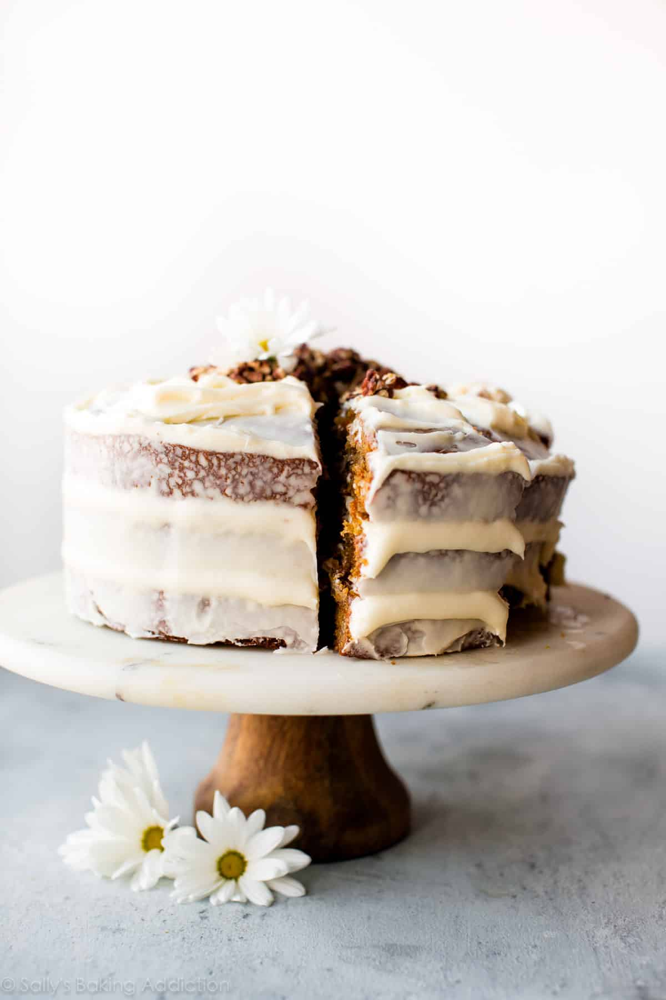
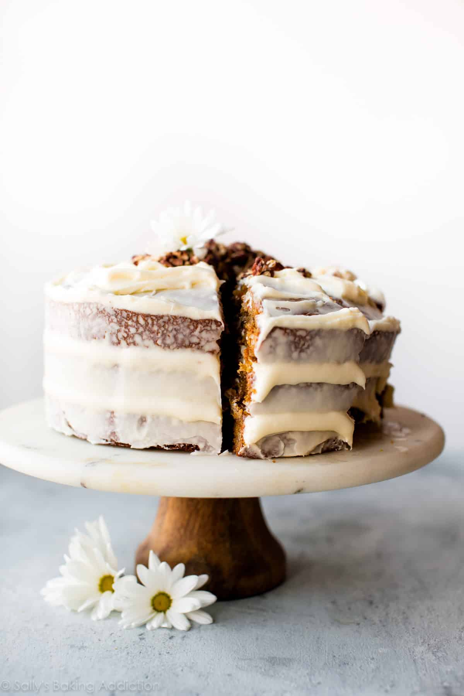
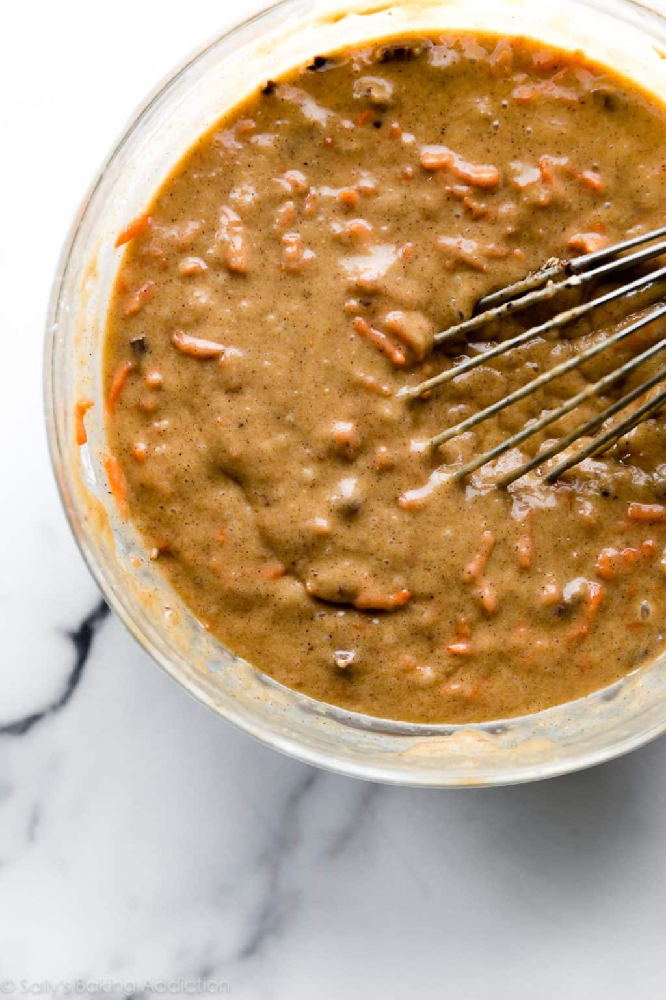
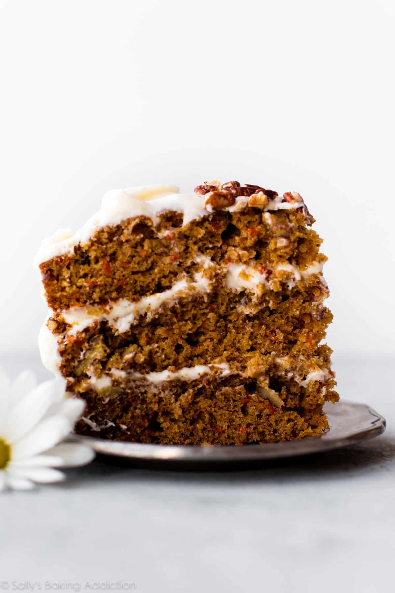
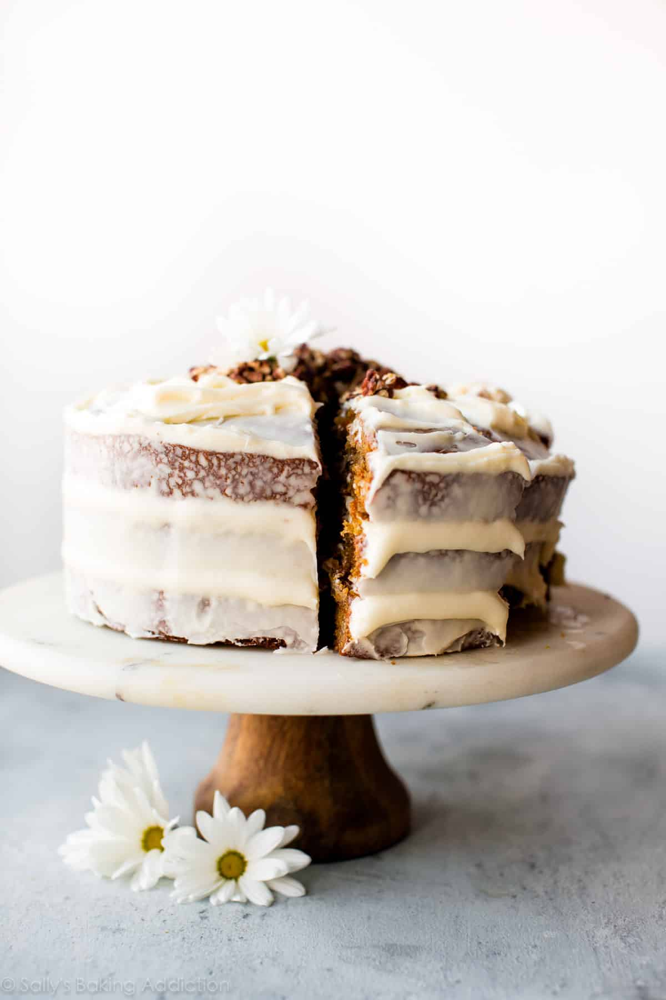

My Favorite Carrot Cake Recipe
 

|
|
| BREAD / CAKES / COOKIES / CUPCAKES / PIES / BAKING TIPS / RECIPES |
|
My Favorite Carrot Cake Recipe |
|
| Posted on March 23, 2015 / posted in Cakes / 1011 Comments |
|



|
Order Now |
Tiramisu is a timeless no-bake Italian dessert comgining espresso-dipped ladyfingers and a creamy lightly sweetedned mascarpone cream. This recipe is form the late Maida Heatter and is easily the best homemade tiramisu recipe that I've ever tried. A couple months ago, I was sent a new cookbook called Happiness is Baking. This cookbook includes Maida Heatter’s favorite recipes with the foreword written by Dorie Greenspan. I, unsurprisingly, immediately fell in love with my newest cookbook. It’s a collection of 100 foolproof and classic desserts including cookies, cakes, muffins, pies, tarts, and more that range from simple everyday cookies to outrageously indulgent chocolate souffle cake Ingredients
For those not familiar, Maida Heatter is an icon, especially in the baking world. Dubbed the Queen of Common Tiramisu Questions – Answered
|
I want to recieve emails about: |
Frequency
|
Email: |